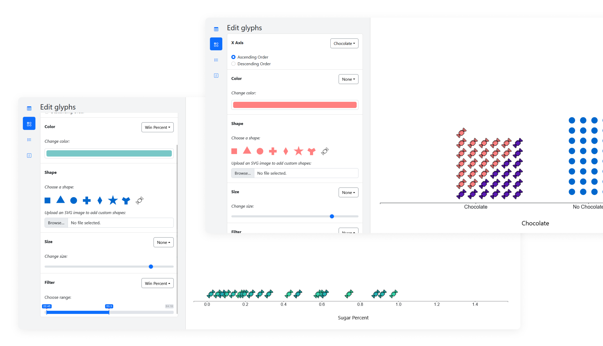
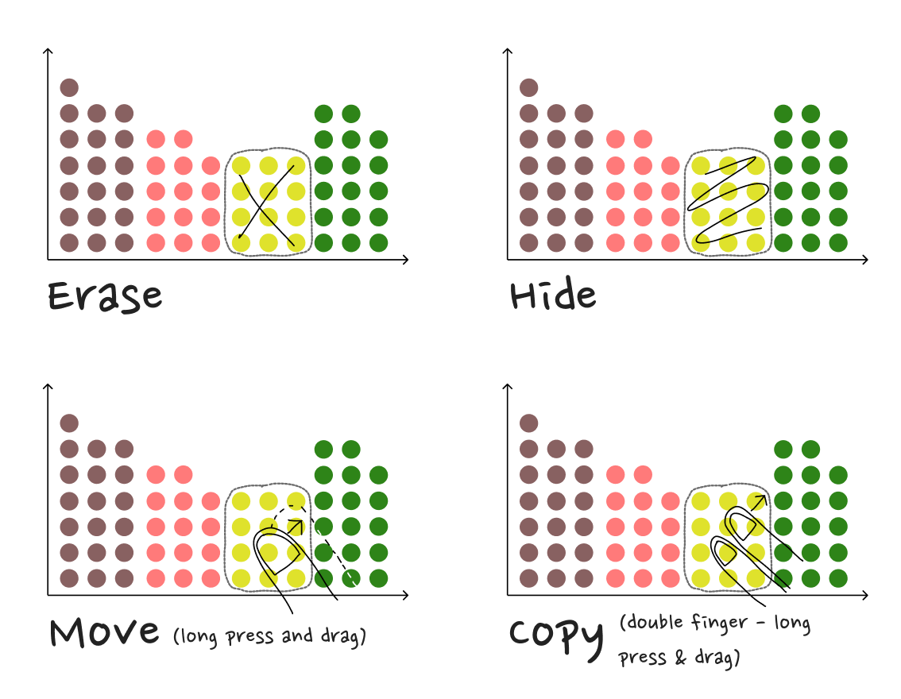
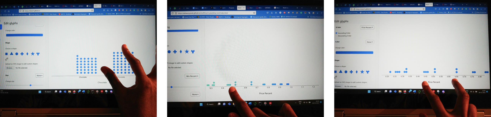
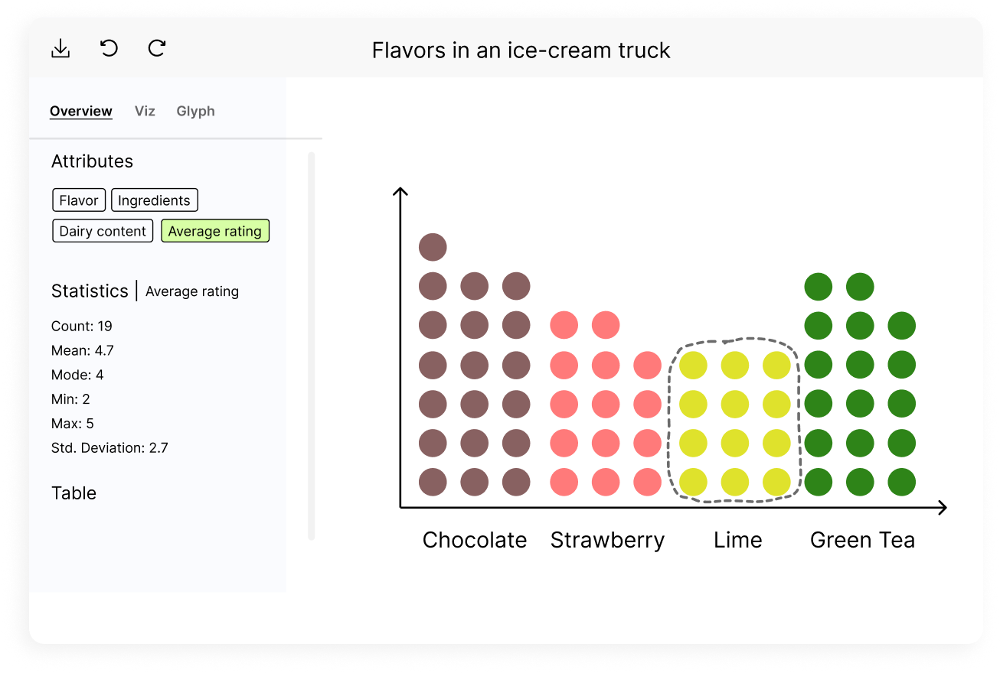

Context
In this project, we aimed to introduce a tool for exploring
multivariate data, capitalizing on the increased availability and
affordability of touch-based systems. Our objective was to teach
data visualization and exploration concepts to young learners
using various multitouch interaction techniques as shortcuts to
expedite tasks.
Results
We designed and implemented a multitouch interactive
data-visualization tool targeted at middle-school students to
facilitate data exploration practice. The tool was primarily
developed using JavaScript (including D3.js), HTML, and CSS. It
enables users to interact via pointers, allowing for the use of
fingers (touch) or a stylus interchangeably. Most functions are
also accessible through alternative mouse clicks or mouse wheel
interactions.
My role
This was a project of two in Georgia Tech. While we worked
together throughout the project, I focused more on the design
aspects - literature review, brainstorming ideas, prototyping, and
reporting, while my teammate focused on the development end.

Developed primarily using JavaScript (including D3.js), HTML, and CSS,
the tool enables users to interact via pointers.
Based on our literature review, we decided to build a guided data
exploration tool that leverages active interaction techniques for
analysis.
Problem Identification
Our literature review revealed that guided interactive
learning—where learners actively engage with information to build
their own mental representations—is associated with improved
comprehension. Furthermore, visualizations with interactive
capabilities were found to enhance comprehensibility significantly.
Based on these findings, we developed a guided data exploration tool
that leverages active interaction techniques for analysis.
Features
After researching similar tools such as TinkerPlots, Kinetica, and
DataBreeze, we outlined our requirements, including:
-
Unit Visualizations: The tool utilizes unit visualizations as the
charting type due to their intuitive nature, direct mapping to
each data point, and flexibility to transform into various
visualization types like dot plots, scatter plots, and beeswarms.
This approach also supports accessing details on demand.
-
Zoom and Pan: We addressed the limitation of the 'pinch to zoom'
option with fixed aspect ratios in scatter plots by enabling
pinching both on the chart and along an axis. Users can also
perform a lasso selection when zoomed in. For panning, we
implemented a single-pointer drag along the axis to avoid
interfering with lasso selection.
-
Sorting and Updating: Users can change the order of attributes
along an axis by long-pressing on the axis label, avoiding
interference with axis zoom/pan. Updating the x-axis attribute can
be performed via a four-pointer swipe on the chart area, also
achievable from the control panel.
-
Undo/Redo: Actions can be reversed with a three-finger swipe to
the right, or redone with a swipe to the left on the chart.

An initial iteration of the multitouch interactions
We chose unit visualizations due to their direct mapping to each data
point and flexibility to transform into various visualizations.

Pinch on the chart to zoom while keeping the aspect ratio fixed; Pan
to swipe; Pinch along the axis to zoom along it.

An initial prototype of the control panel - provides an overview of
the data and buttons for novices that do the same actions as the
shortcuts .
Challenges
We encountered several challenges:
-
Browsers such as Firefox and Chrome recognized multiple
pointer-downs but tracked pointer-moves for only one pointer at a
time.
-
Conflicts between touch and mouse interactions led to issues, such
as tooltips activating incorrectly. We temporarily disabled
actions on mouseover to mitigate this, although it remains a
limitation for mouse users.
-
Some multitouch interactions conflicted with system and browser
default shortcuts, like long presses opening context menus. We
disabled these default gestures, but this solution may not be
ideal for users accustomed to these shortcuts.
The next phase involves evaluating the tool with middle-school
students to measure its effectiveness in teaching relevant concepts.
A long-term study would also be beneficial to assess how easily
students adapt to the multitouch shortcuts.
Please reach out to me at
nive.mathan21@gmail.com
to discuss the case study in detail.